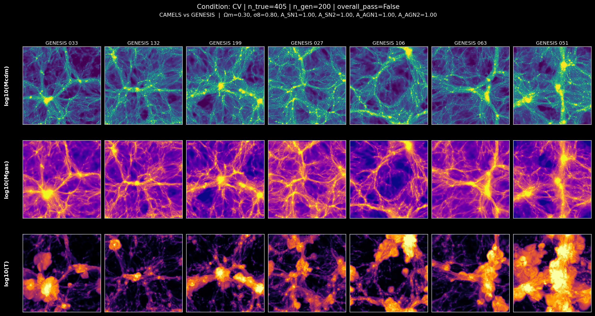

Research
OverviewThis page provides an overview of my research projects in computational cosmology and astroparticle physics, with summaries, code, and related materials for each project below.
GENESIS — Cosmological multifield generation and inference
OngoingGENESIS is a conditional generative model trained on the CAMELS Multifield Dataset. It jointly emulates three correlated 2D projected fields — dark matter density \(M_\mathrm{cdm}\), gas density \(M_\mathrm{gas}\), and gas temperature \(T\) — conditioned on the full six-dimensional parameter vector \(\boldsymbol{\theta} = (\Omega_m,\,\sigma_8,\,A_\mathrm{SN1},\,A_\mathrm{SN2},\,A_\mathrm{AGN1},\,A_\mathrm{AGN2})\), using optimal-transport flow matching (OT-FM) with a U-Net backbone incorporating periodic-boundary convolutions.
GENESIS is proposed as a unified model for both generation and inference: the same learned vector field that produces field samples can also evaluate likelihoods, enabling parameter estimation from observed fields without any additional training.
The model learns a vector field \(\mathbf{v}^\phi(\mathbf{x}_t,\,t,\,\boldsymbol{\theta})\) — a direction at every point in field space at time \(t\) — that transports Gaussian noise \(\mathbf{x}_0 \sim \mathcal{N}(\mathbf{0},\mathbf{I})\) toward the data distribution \(p_1\), producing realistic cosmological maps conditioned on \(\boldsymbol{\theta}\). Here \(\phi\) are the network weights and \(\boldsymbol{\theta}\) the six CAMELS parameters \((\Omega_m, \sigma_8, A_\mathrm{SN1}, A_\mathrm{SN2}, A_\mathrm{AGN1}, A_\mathrm{AGN2})\).
Because GENESIS is a continuous normalizing flow (CNF), the same \(\mathbf{v}^\phi\) can also evaluate the exact probability of any observed field \(\mathbf{x}_1\) under a given \(\boldsymbol{\theta}\). The divergence \(\nabla\cdot\mathbf{v}^\phi\) measures how the flow compresses or expands volume along the trajectory; integrating it yields the log-likelihood with no extra inference network — enabling training-free parameter estimation.

Generated multifield samples from GENESIS.
GENESIS is proposed as a unified model for both generation and inference: the same learned vector field \(\mathbf{v}^\phi\) that produces field samples can also evaluate likelihoods, enabling parameter estimation from observed fields without any additional training.
JANUS — Generative AI for IceCube neutrino events
OngoingThe IceCube Neutrino Observatory is a cubic-kilometer-scale neutrino detector embedded deep in the Antarctic ice, designed to observe Cherenkov photons emitted by charged secondary particles produced in neutrino interactions. Reconstructing the physical properties of these events such as energy, direction, and interaction vertex from sparse and noisy photon signals is a central challenge in IceCube data analysis and is essential for identifying and studying astrophysical neutrino sources.
To address this problem, JANUS investigates conditional diffusion and flow-matching models trained on simulated IceCube data. These models are designed to operate in both directions: generating realistic detector responses from particle-level conditions, and reconstructing event properties from observed detector signals. By framing both simulation and reconstruction within a unified generative modeling framework, JANUS aims to provide a flexible and scalable approach to neutrino event analysis in IceCube.
OPTICUS — Vision Transformer for IceCube optical-property measurement
CompletedTo improve detector calibration in IceCube, the Upgrade introduced a camera system that images light propagation through Antarctic ice. These images contain information about the optical properties of both the bulk ice and the refrozen drill-hole ice, but extracting that information requires modeling complex, non-linear image patterns.
OPTICUS is a hybrid CNN–Vision Transformer model developed for this task, combining convolutional feature extraction with global attention over image patches. Trained on simulated camera images, it achieved percent-level accuracy in estimating scattering lengths for both bulk ice and hole ice. In particular, the OPTICUS-Bulk model achieved an overall 68% containment of about 0.42%, while the OPTICUS-Hole model achieved about 0.18%, demonstrating high-precision optical-property estimation in both regimes.